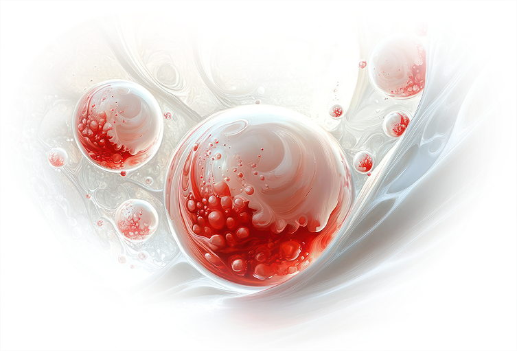

周邊血是循環於人體的血液，
成人可透過特殊方式，
使骨隨中的造血幹細胞釋放到血液中，
經過分離收集後即是周邊血幹細胞。
另外周邊血中還含有許多的免疫細胞
儲存一次周邊血幹細胞，
可同時取得造血幹細胞及免疫細胞，
給您的健康雙重保障。
周邊血幹細胞 PERIPHERAL BLOOD
PERIPHERAL BLOOD

為什麼要儲存周邊血幹細胞 WHY
相比過去的骨髓移植所需付出的漫長等待及不確定性，
若您沒有保存臍帶血，
周邊血幹細胞無疑是最佳的替代方案。
目前周邊血幹細胞的移植數量已超越骨髓移植，
周邊血幹細胞取得容易，
自體無須等待配對，
透過保存年輕健康的周邊血幹細胞，
為您的健康提供更多的選擇及保障。
立即儲存
若您沒有保存臍帶血，
周邊血幹細胞無疑是最佳的替代方案。
目前周邊血幹細胞的移植數量已超越骨髓移植，
周邊血幹細胞取得容易，
自體無須等待配對，
透過保存年輕健康的周邊血幹細胞，
為您的健康提供更多的選擇及保障。
WHY
專業儲存 EXPERTISE
生之寶細胞儲存流程，
皆通過TFDA認可的專業細胞保存庫、
並通過GTP實地訪查合格及AABB雙認證的實驗室，
以最高規格的儲存技術，
提供您最頂尖的細胞儲存方案。
我們嚴格執行品質管理，
從收集、分離、檢測到冷凍保存，
並導入專利超低溫保存技術及智能品質管理系統，
確保細胞維持長期活性。
立即儲存
皆通過TFDA認可的專業細胞保存庫、
並通過GTP實地訪查合格及AABB雙認證的實驗室，
以最高規格的儲存技術，
提供您最頂尖的細胞儲存方案。
我們嚴格執行品質管理，
從收集、分離、檢測到冷凍保存，
並導入專利超低溫保存技術及智能品質管理系統，
確保細胞維持長期活性。
EXPERTISE

APPLICATIONS